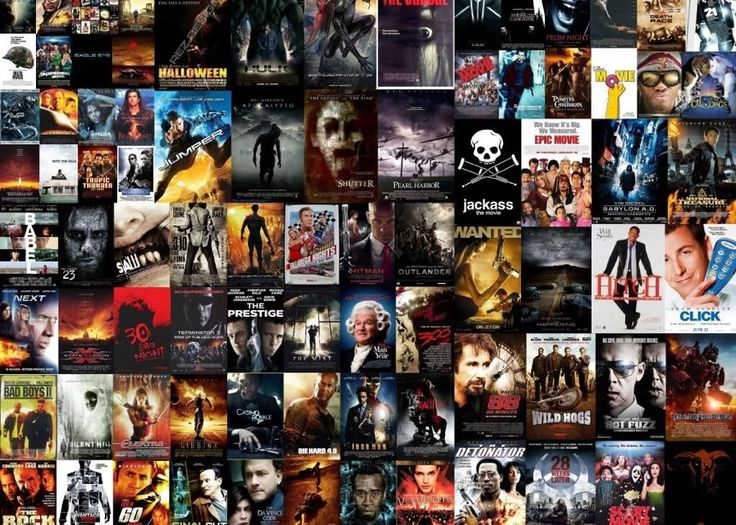

In this project, we will perform data cleaning on 8,000+ rows of mushroom data and conduct exploratory data analysis. We will also apply machine learning technique to train a model to predict mushroom edibility.


In this project, we take raw housing data and transform it in SQL Server to make it more usable for analysis.

In this project, we will study the different variables in the movies data and determine the factors that impact the gross revenue in movie making.
In this project, we will explore and investigate the patient's arrival pattern across different Singapore's public hospital. After that, we will visualize the hourly trend of patient's arrivals by different weekdays.
In this project, we will explore the relationships among multiple variable, conduct stratified analysis on the data and grouped them into 3 categories in terms of their area and visualize the result.
In this project, we will perform Python simulation to carry out repeated random sampling. We will then vizualize the sampling distribution for 200, 500 and 1000 sample size using histogram.

This will be the Tableau Dashboard for the projects. More dashboard will be uploaded when the rest of the projects are completed.